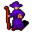

Celdar¶| Stat | Value |
|---|---|
| Class | humanoid |
| HP | 0 |
| Max AP | 10 |
| Attack cost | 10 |
| Move cost | 10 |
| Damage | 0 |
| Attack chance | 0 |
| Block chance | 0 |
| Damage resistance | 0 |
| Critical skill | 0 |
| Critical multiplier | 0 |
Found on¶
Quests¶
- Restless in the grave: stages 130
- galmore_nondisplayed (hidden flag): stages 19
Dialogue (24 lines)
What the dialogue says, exactly as in the game files. Lines are listed once; links jump to the line a choice leads to.
celdar Celdar: “And who might you be? Come to sell me one of those trinkets that you people sell, eh?”
- Next → celdar_1
celdar_1 Celdar: “No, let me guess - you want to know if I have any items to trade?”
- Next → celdar_2
celdar_2 Celdar: “Let me tell you something. I do not want to buy anything from you, nor do I want to sell you anything. I just want to be left alone here, now that I have made it all the way to this safe haven.”
- Next → celdar_3
celdar_3 Celdar: “I have travelled all the way from my home town of Sullengard, and on my way to Brimhaven, I have stopped at this place to get a break from all the commoners that always bother me with their trinkets and whatnots.”
- Next → celdar_4
celdar_4 Celdar: “So, if you will excuse me, I really need my well deserved rest here. Without you bothering me.”
- “OK, I will leave.” → conversation ends
- “Wow, you're the friendly type aren't you?” → celdar_5
- “I should put my sword through you for talking like that.” → celdar_5
- “I'm here to give you a gift from Eryndor. He died, but I was told to give you something from him.” (if reached stage 123 of Restless in the grave; NOT reached stage 130 of Restless in the grave) → celdar_musicbox_10
celdar_5 Celdar: “Are you still around? Did you not listen to what I said?”
celdar_musicbox_10 Celdar: “Eryndor? That scoundrel finally got what was coming to him, did he? And now you're here, dangling a prize in front of me, expecting what? Gratitude? Payment? Hah! Whatever trick you think you're playing, I'm not biting.”
- Next → celdar_musicbox_15
celdar_musicbox_15 Dummy NPC: “Celdar pauses, and narrows her eyes as she assesses you.”
- “I have this music box. [Showing it to her.]” → celdar_musicbox_20
celdar_musicbox_20 Celdar: “Wait... you're serious, aren't you? He actually sent you to bring me the music box? Hmph. That doesn't sound like him. He was always the type to take, not give.”
- “He wanted to do the right thing.” → celdar_musicbox_25
celdar_musicbox_25 Celdar: “The right thing? Eryndor always did have a flair for the dramatic, but this... this is unexpected.”
- Next → celdar_musicbox_30
celdar_musicbox_30 Dummy NPC: “While crossing her arms, she begins to study you.”
- Next → celdar_musicbox_35
celdar_musicbox_35 Celdar: “I spent years chasing that wretched box, only for him to snatch it out from under me. And now, after death, he decides to hand it over? What, am I supposed to be touched?”
- Next → celdar_musicbox_40
celdar_musicbox_40 Dummy NPC: “She scoffs but reaches out for the box.”
- “You reach out, your hands meet with the mysterious music box held between your hands and she takes it from you.” (if hand over 1× Mysterious music box) → celdar_musicbox_45
- “I can't believe this, but I forgot to bring the music box. Sorry. I will have to come back later. Stay here.” (if NOT carry 1× Mysterious music box) → conversation ends
- “I just gave you that music box...” (if reached stage 19 of galmore_nondisplayed (hidden flag); NOT reached stage 130 of Restless in the grave) → celdar_musicbox_50
celdar_musicbox_45 Celdar: “Hmph. Fine. If he truly meant it, then I'll take it. Not that it changes anything. Eryndor and I were never friends, and his little gesture won't rewrite history. But... at least he finally understood what was mine to begin with.” — effects: sets stage 19 of galmore_nondisplayed (hidden flag)
- Next → celdar_musicbox_50
celdar_musicbox_50 Dummy NPC: “She examines the box for a moment, running a hand over it before giving you a final look.”
- Next → celdar_musicbox_55
celdar_musicbox_55 Celdar: “Here, take this longsword, I have no need for it. But...” — effects: gives 1× Blood seeker, sets stage 130 of Restless in the grave
- Next → celdar_musicbox_60
celdar_musicbox_60 Celdar: “Tell me, does he rest easy now, or is he still out there, clinging to unfinished business?”
- “No, he's not at peace. He's still out there, lingering about, bound by unfinished business.” → celdar_musicbox_65
celdar_musicbox_65 Dummy NPC: “Celdar exhales sharply, her fingers tightening around the music box as she looks away for a brief moment.”
- Next → celdar_musicbox_70
celdar_musicbox_70 Celdar: “Hmph. Figures. The stubborn fool never knew when to let go.”
- Next → celdar_musicbox_75
celdar_musicbox_75 Dummy NPC: “She turns the box over in her hands, her expression briefly unreadable. Then, softer, almost to herself:”
- Next → celdar_musicbox_80
celdar_musicbox_80 Celdar: “Chasing relics, chasing victories, chasing debts that can never be repaid... I suppose it doesn't matter now.”
- Next → celdar_musicbox_85
celdar_musicbox_85 Dummy NPC: “She shakes her head, composing herself before glancing at you once more.”
- Next → celdar_musicbox_90
celdar_musicbox_90 Celdar: “Well, he made his choices. And I made mine. But... I wouldn't wish that kind of fate on anyone. Not even him.”
- Next → celdar_musicbox_95
celdar_musicbox_95 Dummy NPC: “With that, she straightens her posture, her usual sharpness returning, though the moment of reflection lingers in her eyes.”
- “I hope that in the future, that music box brings your happiness.” → conversation ends
Community notes¶
Written by players, not generated from game data. Observations: what players notice in-game · Lore: the in-world story · Trivia: real-world facts, references, development history · Theory / speculation: unconfirmed ideas; may just be unfinished content
Observations¶
Nothing here yet. Know something? Add it.
Lore¶
Nothing here yet. Know something? Add it.
Trivia¶
Nothing here yet. Know something? Add it.
Theory / speculation¶
Nothing here yet. Know something? Add it.
Monster ID: celdar · Data from v0.8.18